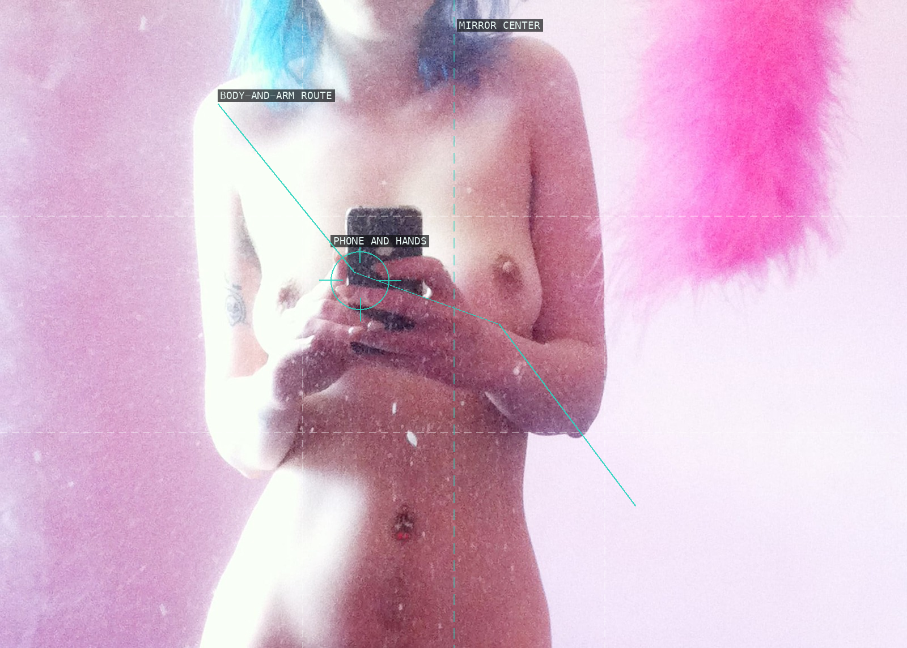
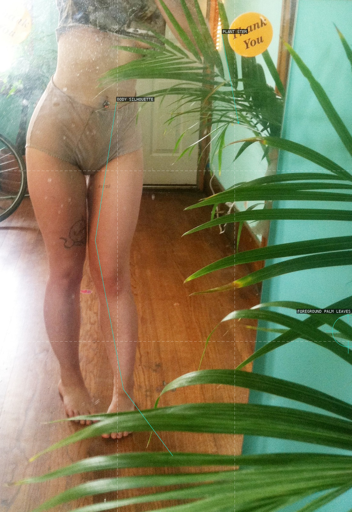
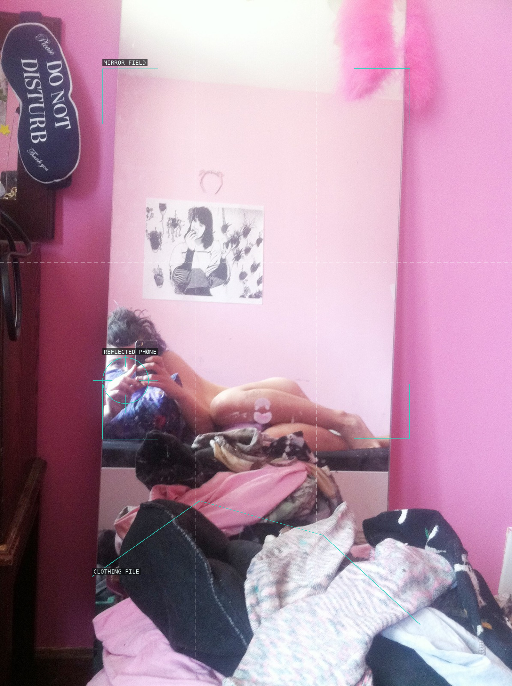
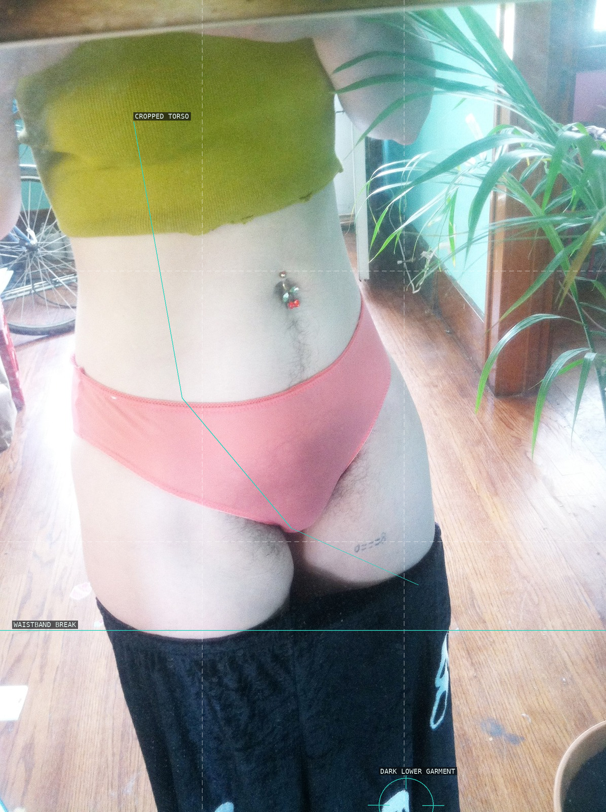
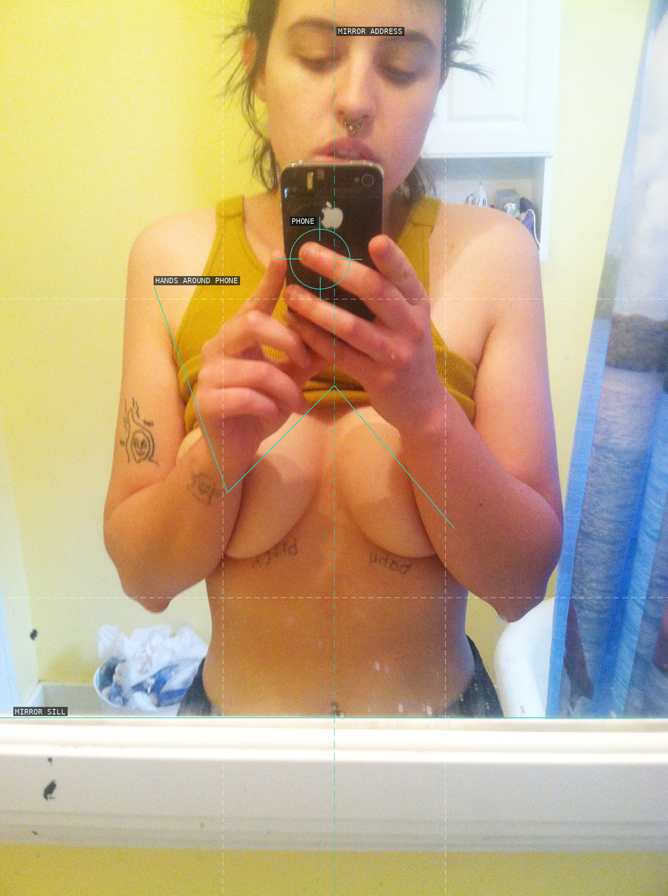
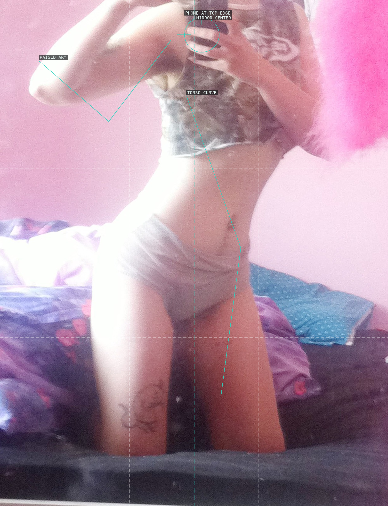
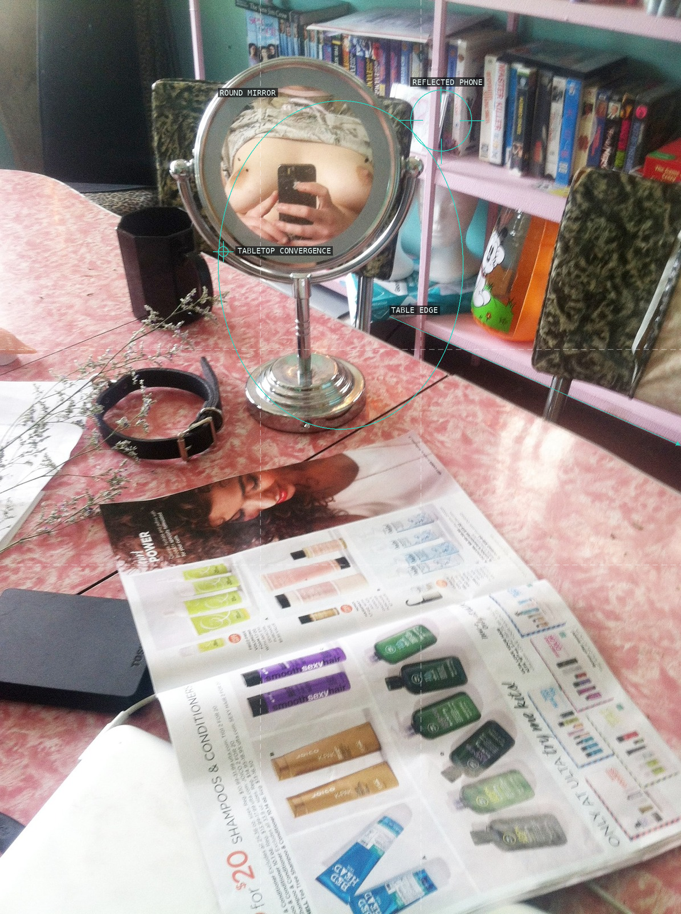

/* molly-soda - proofs */
7 plates. Deterministic overlays rendered by the composition-analysis skill.

01-should-i-send-this-01
A near-central mirror address is softened by the body and arm route across the pink field.

02-should-i-send-this-02
A cropped body shares the vertical frame with an intrusive screen of plant leaves.

03-should-i-send-this-03
The mirror holds a small camera gesture above an obstructing field of discarded clothes.

04-should-i-send-this-04
The cropped torso is stabilized by the waistband's abrupt dark horizontal.

05-should-i-send-this-05
A deliberately frontal mirror address is interrupted by the hands and phone over the face.

06-should-i-send-this-06
Cropping turns a raised arm, camera, and waist into a tight mirror-performance field.

07-should-i-send-this-07
A round tabletop mirror nests the selfie inside a converging domestic still life.